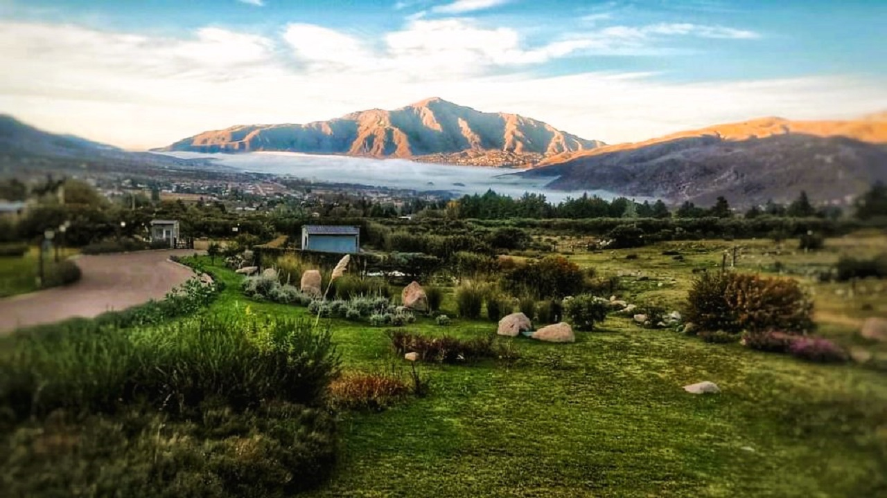

Bariloche es un destino atractivo durante todo el año por su entorno natural, que incluye el Parque Nacional Nahuel Huapi y otras reservas. Ofrece una variedad de actividades como esquí en invierno, deportes acuáticos y senderismo en verano, además de opciones de alojamiento y gastronomía. El sitio web de Bariloche Turismo describe Bariloche como uno de los lugares más intensos e increíbles de Argentina, con vistas impresionantes, lagos, arroyos, ríos de deshielo y montañas.

Tafí del Valle es interesante para visitar por su belleza natural, la combinación de selva y valle árido, y su ambiente tranquilo ideal para relajarse. Ofrece actividades como turismo de estancias, caminatas, paseos a caballo, y la posibilidad de disfrutar de la cultura local y la gastronomía, como los quesos tradicionales.
Ushuaia es una ciudad muy interesante para visitar debido a su ubicación única como el punto más austral del mundo, su belleza natural impresionante y su rica historia. Es el lugar perfecto para disfrutar de aventuras en la naturaleza, aprender sobre la cultura local y disfrutar de experiencias únicas